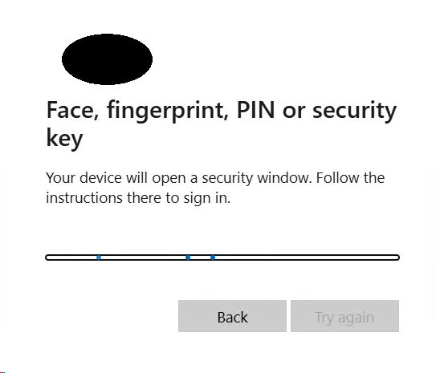
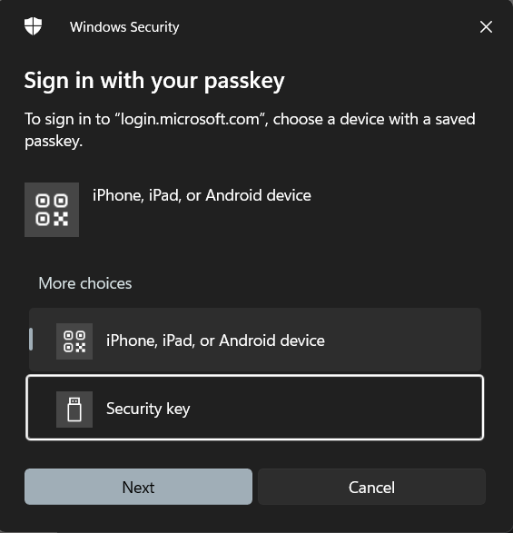
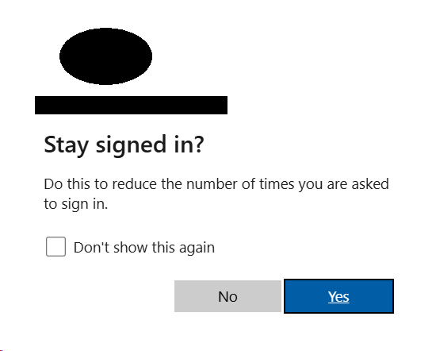
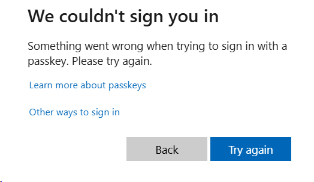
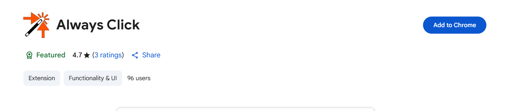
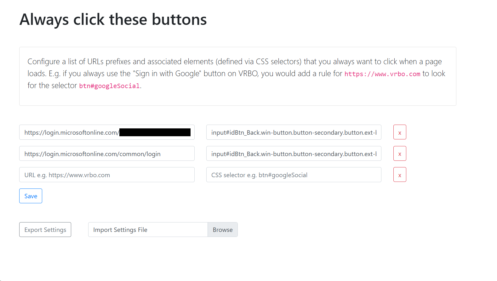

Always Click and Entra ID
Posted on 2025-04-21 in code
An annoyance born of Entra ID flow, SSO, and hardware tokens
Any online account you care about which is capable of supporting multi-factor or multi-step authentication should have those capabilities enabled - the added security is very much worth it. Even better, if any of your accounts support hardware tokens or passkeys it's a good idea to use them for yet greater security. Microsoft's M365 ecosystem, through their Entra ID authentication services, does support hardware tokens such as Yubikeys and passkeys (though only through the Microsoft Authenticator app).
So, I have a Yubikey configured for authentication to a corporate M365 account. This corporate account is also used to access a number of other services through Entra ID SSO connections - when I need to access these other services the website makes an authentication request through the browser and it's passed to Windows where I'm prompted to use my hardware token.


I enter a pin, tap the token, and authenticate. So far, so good...
Then this pops up:

The Entra ID "Stay signed in?" prompt. It is supposed to make life easier by allowing you to reduce the frequency of sign-in prompts on your personal system. The problem is that when using SSO to authenticate to third-party services it is the third-party service which controls the duration of the session, and this prompt does nothing. Additionally, (for my tenant configuration, at least) the "Don't show this again" option has no effect.
So, I frequently find myself working between several tabs/services, and one of the SSO'ed session expires. Since the authentication was through a passkey/token the page with the expired session (even if it is in the background) will trigger the Windows "Sign in with your passkey" popup, interrupting whatever I'm doing. That can't be helped, and using a token means the interruption is at least quick and easy to get through - enter pin and tap token. However, adding insult to injury, if after re-authenticating the expired session I forget to click over to the background tab that started the authentication flow and click past the "Stay signed in?" prompt again the authentication flow will soon time out and when next I go back to that tab I'll have to go through the process all over again.

A partial solution
Nothing can be done at the user level about the expiration of SSO sessions and triggered Windows authentication popups... but there is at least a way to make the authentication complete without having to click the background tab and hit no/yes on the "Stay signed in?" prompt every time - The Chrome extension Always Click.

This handy extension will auto-click an element on a web page when it loads based on the URL and CSS selector. To make it work on the M365/Entra ID "Stay signed in?" prompt install the extension, go to the extension's options, and add two URLs to it's configuration:
- https://login.microsoftonline.com/M365-TENANT-ID/login
- https://login.microsoftonline.com/common/login
Replace "M365-TENANT-ID" with your M365 tenant's GUID, which you will sometimes see in the URL bar when re-authenticating your account or can lookup here. For the CSS selector paste in "input#idBtn_Back.win-button.button-secondary.button.ext-button.secondary.ext-secondary" without quotes on both lines. Or you can download and import this settings file.

With this configuration in place whenever that maddening "Stay signed in?" popup appears the "No" button will be automatically clicked, and authentication completed. One less click for every Entra ID authentication flow, and several saved clicks for every re-authentication triggered by a background tab.
Walk on,
Bitpusher
\`._,'/
(_- -_)
\o/